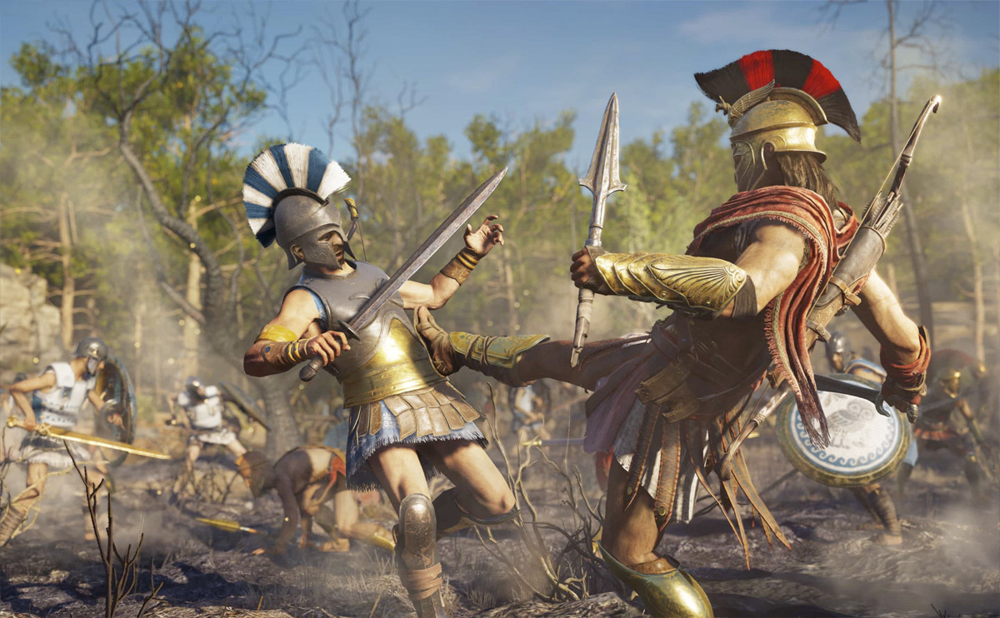
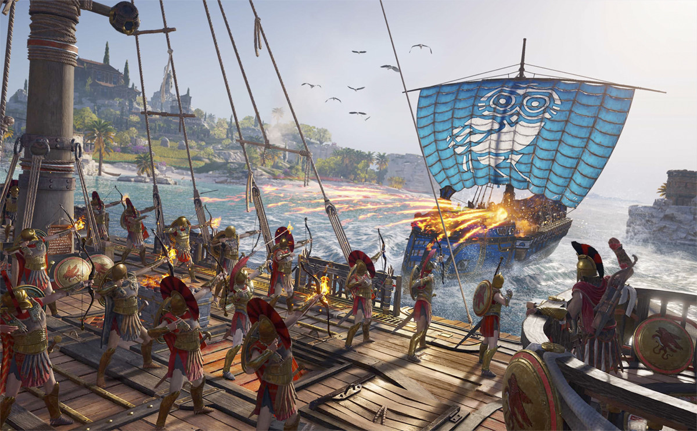
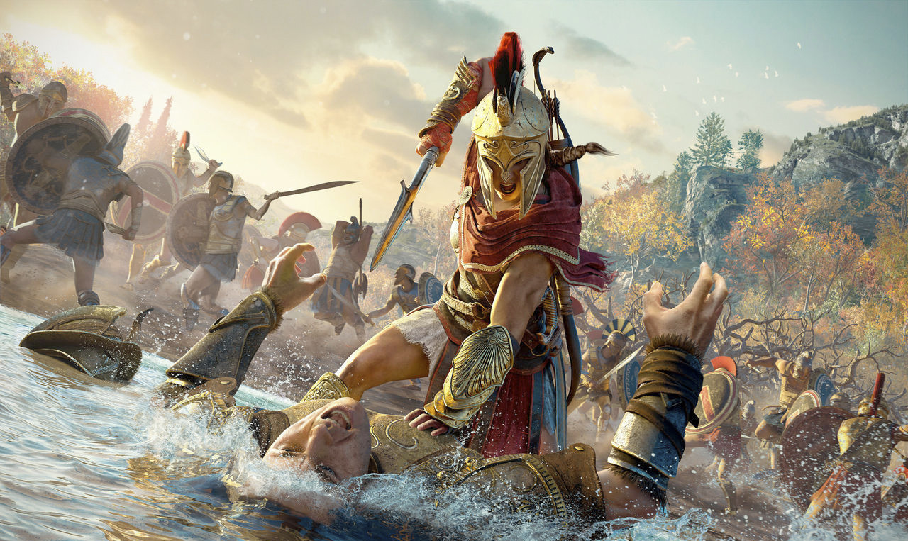

Assassin's Creed: Odyssey ya está entre nosotros y muchos de vosotros aún os estaréis acostumbrando a descubrir el juego. Tanto para aquellos que llegan nuevos a la saga como para los que andan un poco perdidos, os traemos una guía con todos los trucos, mapas y consejos que vais a necesitar. Desde cómo conseguir materiales o dinero hasta subir de nivel rápido o desbloquear el final bueno, a continuación encontrarás una completa guía para superar todos los retos que esconde Assassin's Creed: Odyssey y acceder a todos sus secretos. La guía estará en constante crecimiento, así que vuelve de vez en cuando para ver qué nuevos secretos hemos desvelado.

CONSEJOS PARA PRINCIPIANTES.
¿DÓNDE ESTÁN LOS COFRES LEGENDARIOS?
Los cofres legendarios de Assassin's Creed Odyssey son una de las mejores fuentes para encontrar equipo adaptado a tu nivel. En los cofres están algunos de los mejores objetos del juego, así que te dejamos una completa guía con mapa y vídeo para encontrarlos todos.
CÓMO SUBIR DE NIVEL RÁPIDO.
Lo principal para subir de nivel lo más rápido posible es, basicamente, tener el mayor número de misiones activas en cada momento. Primero con las misiones secundarias que poco a poco irás viendo en el mapa. Segundo con las de estatuas y el barco. Luego agradecerás tener un completo listado de misiones para poder elegir cuáles son aquellas que te van a dar más experiencia por completarlas. Además, cada vez que te cruces con una tabla de mensajes en nuevas ciudades o en tu barco, acepta todas las que haya, sin importar si son temporales o no. Aquí la idea es que la mayoría responden a casos muy genéricos como matar a X número de enemigos o destruir barcos, y como vas a hacerlo conforme avances en la historia, eso que te llevas.
¿DÓNDE ESTÁN LAS LOCALIZACIONES SUBMARINAS?
Uno de los retos más complicados del juego es encontrar todas las localizaciones submarinas que esconde el gran mapa de Assassin's Creed Odyssey. Con esta guía con mapa y vídeo podrás encontrarlas todas en un abrir y cerrar de ojos. Sólo recuerda saquearlas al completo para conseguir el correspondiente logro y trofeo.
CÓMO CONSEGUIR MATERIALES.
Conseguir materiales a base de recoger chatarra del suelo es un trago bastante pesado. Hacerlo a base de destruir barcos tampoco es especialmente rápido. Pero sí hay una forma de hacerte con todo tipo de materiales de forma fácil. ¿El truco? Luchar y robar. A base de abrir cofres y acabar con enemigos no sólo conseguirás buenos saqueos de materiales, también un buen puñado de armas y objetos que luego podrás desmantelar para hacerte con los valiosos materiales que los componen. Si además hablamos de matar mercenarios o hacer batallas de conquista, conseguirás también otros materiales menos comunes que te serán de gran ayuda para mejorar tu barco, armas y accesorios.
CÓMO CONSEGUIR DINERO.
Aquí hay que encontrar un equilibrio. Vender armas y accesorios es la forma perfecta de farmear dinero, pero también supone no contar con la posibilidad de poder desmantelarlos para conseguir sus necesarios materiales. Pon en cada momento la situación en una balanza para saber qué te conviene más. Al final todo se reduce a saquear y luchar todo lo que puedas, y es que a más armas y accesorios, también más materiales o dinero. Además, con tus saqueos encontrarás objetos que no te servirán para nada y podrás vender de golpe para sacar una buena tajada de ellos.
CÓMO ACABAR CON TODOS LOS MIEMBROS DEL CULTO.
A continuación te dejamos una completa guía con un mapa en el que encontrar a todos los miembros del Culto. Su botín y la experiencia que consigues acabando con ellos es todo un filón, así que aprovecha que estás por la zona para acabar con el que esté a un nivel más o menos accesible. Si no los encuentras con Ícaro, haz ruido a base de batallas para que sean ellos los que se acerquen a ti. No necesitas las pistas para poder desbloquearlos y luchar contra ellos. Las pistas sólo se encargan de marcar su posición exacta en el mapa para facilitarte el encuentro.
CÓMO CONSEGUIR EL FINAL BUENO.
Conseguir el final bueno de Assassin's Creed Odyssey es relativamente fácil, pero si quieres una ayuda para ir sobre seguro y saber qué hacer o decir en cada momento clave de la historia, esta guía para conseguir el final bueno te será de gran ayuda. Ojo a los spoilers.